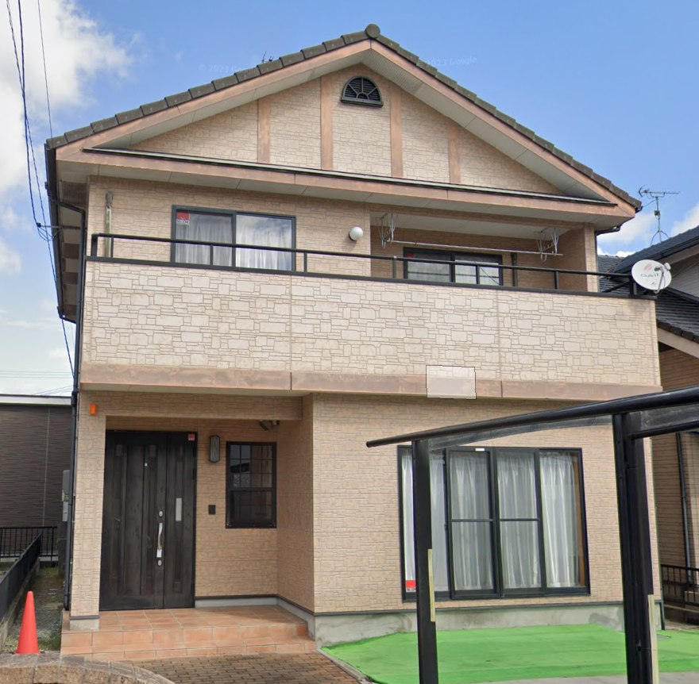

放課後等デイサービス めいぷる三原校

みんなが笑顔になれる居場所づくり
施設概要
対象年齢
小学1年生～高校3年生
定員
10名
開所時間
平日：放課後～17:30
休学日：9:00～16:00
療育内容
豊かな沼田東の自然の中で、五領域を意識しながらそれぞれの個性に合った療育を行っています。
健康・生活
季節の変化を自然の中で体感しながら健康的な生活リズムを築きます。野菜作りや収穫体験を通じて、食への興味や自然との関わりを育みながら、基本的生活習慣の確立を目指します。森林浴やハーブガーデンでのリラックスタイムを設け、心身の健康管理にも配慮します。
運動・感覚
一人一人に合った運動プログラムをもとに、以下の活動を実施します：
・起伏のある地形を利用した全身運動（坂道歩き、木登り等）
・小川や池での水遊び体験による感覚統合
・季節の自然物（落ち葉、木の実等）を使った感覚遊び
・裸足での芝生歩きによる触覚刺激
これらの活動を通じて、楽しみながら運動機能と感覚統合能力の向上を図ります。
認知・行動
自然環境ならではの多様な刺激を活用し、認知発達を促進します：
・季節の植物や生き物の観察による注意力・集中力の向上
・自然素材を使った工作による創造性の育成
・天候や気温の変化への適応力養成
・虫や小動物との関わりを通じた感覚過敏への段階的なアプローチ
言語・コミュニケーション
自然豊かな環境での活動を通じて、自然な形での言語発達とコミュニケーション能力の向上を目指します：
・野鳥の声や虫の音を真似る音声遊び
・自然の中での発見を共有する対話的活動
・野外での絵本の読み聞かせ
・自然物を使った伝承遊びやごっこ遊び
人間関係・社会性
個性を活かした集団活動を通じて、社会性の発達を支援します：
・グループでの畑作業による協調性の育成
・自然の中での探検活動によるチームワークの形成
・生き物の世話を通じた思いやりの心の醸成
・季節の行事や収穫祭などの共同体験